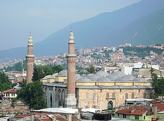

Overview
La Grande Mosquée de Bursa est une mosquée de Bursa, en Turquie. Elle fut érigée sur ordre du Sultan ottoman Bayezid Ier entre 1396 et 1399. Elle comporte vingt dômes et deux minarets.
مسجد أُولُو جامع ببورصة ومعناه «الجَامِعٌ الأَعْظَمُ» ببورصة وفي التسمية الأجنبية: «جامع بورصة الكبير». هو مسجد كبير بناه السلطان العثماني بايزيد الأول أواخر القرن الرابع عشر الميلادي بمدينة بورصة، لتركيا. اسم الجامع مأخوذ من اسم جبل «أُولو» الشاهق ببورصة. بُني الجامع على الطريقة المعمارية السلجوقية بين عامي 1396م و 1399م، ويُعتبر تاريخ افتتاحه هو عام 802 هـ بحسب النص العربي المكتوب بالحفر على الخشب على باب منبر الجامع، وهو يوافق عام 1399 بالتقويم الميلادي. وللجامع 20 قُبّة بحسب النذر الذي نذره السلطان بايزيد الأول، ومئذنتان.
The Grand Mosque of Bursa is a historic mosque in Bursa, Turkey. It was commissioned by the Ottoman Sultan Bayezid I to commemorate his great victory at the Battle of Nicopolis and built between 1396 and 1399. The mosque is a major monument of early Ottoman architecture and one of the most important mosques in the city, located in the heart of the old city alongside its historic markets.
Bursa Ulu Cami, Bursa'da I. Bayezid tarafından 1396-1400 yılları arasında yaptırılmış ulu camidir.
Masjid Bursa atau lebih dikenal dengan Masjid Raya Bursa adalah sebuah masjid bersejarah peninggalan Kesultanan Utsmaniyah yang berada di kota Bursa, Provinsi Bursa, Turki. Masjid ini dibangun pada tahun 1396 hingga tahun 1399 atas perintah Sultan Bayezid I untuk memperingati kemenangan besarnya di Pertempuran Nikopolis. Masjid ini awalnya merupakan sebuah monumen utama arsitektur Ottoman, sekaligus menjadi masjid terpenting di kota Bursa.
اولو مسجد یعنی عظیم مسجد ترکی کے شہر بورصہ میں واقع ایک مسجد ہے جسے عثمانی طرز تعمیر کا اولین شاہکار سمجھا جاتا ہے۔ یہ مسجد سلطان بایزید اول کے حکم پر علی نجار نے 1396ء سے 1399ء کے درمیان قائم کی۔ مستطیل شکل میں بنی اس مسجد پر 20 گنبد ہیں جن کے بارے میں کہا جاتا ہے کہ سلطان بایزید نے جنگ نکوپولس میں فتح کی صورت میں 20 مساجد تعمیر کرنے کا عہد کیا تھا اور بعد ازاں انہی 20 مساجد کی جگہ بورصہ میں 20 گنبدوں والی یہ مسجد تعمیر کی گئی۔ اس کے دو مینار بھی ہیں۔ اولو جامع مسجد اپنی تعمیر کے وقت اسلامی دنیا کی پانچ اہم ترین مساجد میں سے ایک تھی۔ اسے عثمانی فن تعمیر کا آغاز سمجھا جاتا ہے۔ اس مسجد میں خانہ کعبہ کے دروازے کا احاطہ ہے جو مصر میں مملوکوں نے 1516ء میں تیار کیا تھا اور مصر اور حجاز کی عثمانی فتح کے بعد اسے 1517ء میں مسلم خلیفہ سلطان سلیم اول کو دیا گیا تھا اور اسے بورصہ کی پہلی مسجد میں لگایا گیا تھا۔ مسجد کے اندر معروف خطاطوں کے 192 شاندار فن پارے رکھے گئے جو فن خطاطی کے عظيم نمونوں میں
Die Große Moschee ist eine Freitagsmoschee in der türkischen Stadt Bursa. Das Gotteshaus im frühosmanischen Stil wurde von Sultan Bayezid I. in Auftrag gegeben und zwischen 1396 und 1399 erbaut.
La Gran Mezquita de Bursa o Ulu Cami es una histórica mezquita otomana construida en el siglo XIV en la ciudad de Bursa, hoy en la homónima provincia de Bursa de Turquía. Construida en la etpa de la arquitectura otomana temprana con influencias de la arquitectura selyúcida, su erección fue ordenada por el sultán otomano Bayaceto I y fue construida entre 1396 y 1399. La mezquita tiene 20 cúpulas y 2 minaretes.
La Grande Moschea di Bursa o Ulu Camii è la maggiore moschea di Bursa in Turchia. Costruita nello stile selgiuchide, venne fatta costruire dal sultano Ottomano Bayezid I ed edificata fra il 1396 ed il 1400. La moschea ha venti cupole e due minareti.
布尔萨大清真寺 是土耳其布尔萨最大的一座清真寺，位于老城区中心的阿塔图尔克大道。1396年奥斯曼帝国在尼科波利斯战役中获胜后，苏丹巴耶济德一世下令修建，1399年年建成，由建筑师Ali Neccar设计建造。这是一个巨大的矩形建筑，有20个圆顶和2个叫拜楼。
부르사 울루 자미(튀르키예어: Bursa Ulu Camii) 또는 부르사 그랜드 모스크(영어: Bursa Grand Mosque)는 터키 부르사에 위치한 모스크이다. 1396년 착공해 1399년에 완공했다. 셀주크 튀르크 양식으로 지어졌으나 오스만 제국의 술탄인 바예지드 1세의 명으로 건립됐다.
Мечеть Улу-Джами или Большая мечеть — мечеть в городе Бурса, Турция. Построена в сельджукском стиле по приказу султана Баязида I между 1396—1400 годами. Мечеть украшают 20 куполов, поддерживаемые 12 столбами, и 2 минарета.
Marea Moschee din Bursa este o moschee din orașul Bursa, din Turcia. Ea este cea mai mare și mai importantă moschee din oraș, și una dintre primele moschei construite de otomani.
On the map
Documents and links
- Wikipédia — Français
- Wikipédia — العربية
- Wikipédia — English
- Wikipédia — Türkçe
- Wikipédia — Bahasa Indonesia
- Wikipédia — اردو
- Wikipédia — Deutsch
- Wikipédia — Español
- Wikipédia — Italiano
- Wikipédia — 中文
- Wikipédia — 한국어
- Wikipédia — Русский
- Wikipédia — Română
- Wikidata — Q32339
Data: Wikidata (CC0), updated every 3 months. The year is the earliest known construction date of the building: for a building that became a mosque later (such as Hagia Sophia), it is that of the original building. Photos: Wikimedia Commons, author and licence on each photo's page.